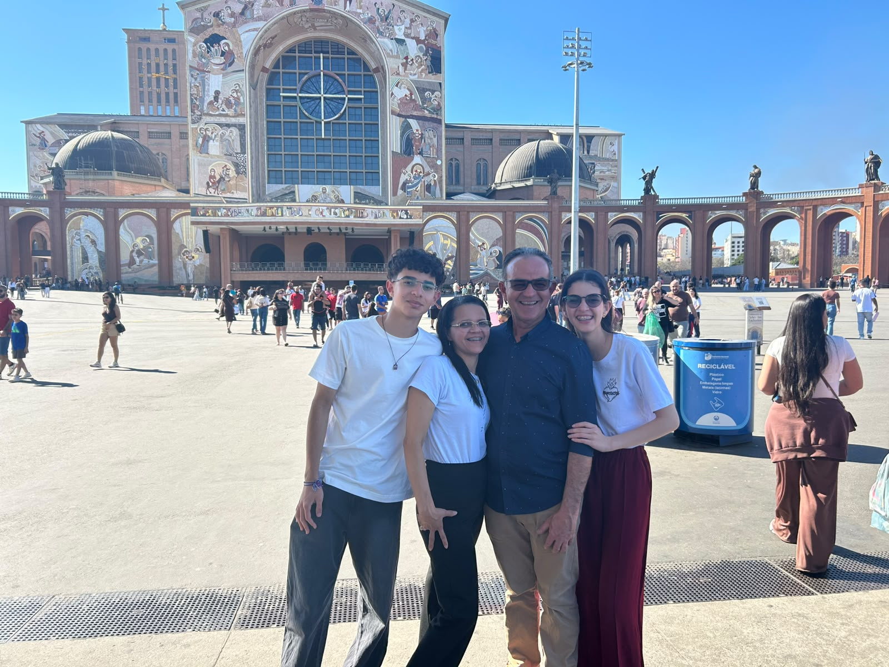
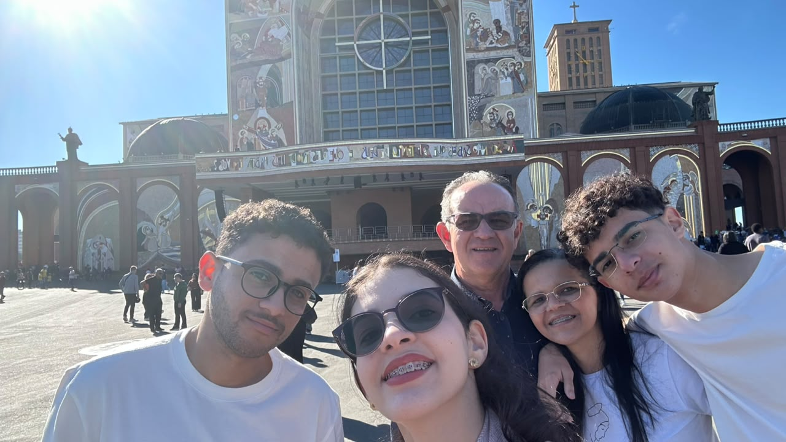

No filme Gênio Indomável, acompanhamos a história de Will Hunting, um jovem que trabalha como faxineiro em uma universidade, mas que possui uma inteligência e uma capacidade extraordinária para a matemática. Apesar de seu grande talento, Will tem dificuldade para lidar com seus sentimentos, relacionamentos e com as experiências difíceis que viveu durante a infância. Ele também costuma afastar as pessoas que tentam ajudá-lo, usando seu comportamento e sua inteligência como uma forma de se proteger. Sua vida começa a mudar quando o professor Gerald Lambeau percebe seu talento e tenta ajudá-lo a desenvolver seu potencial. Para evitar problemas com a justiça e ter uma oportunidade de mudar de vida, Will precisa começar um tratamento com o terapeuta Sean Maguire. No início, os dois enfrentam dificuldades para criar confiança, pois Will tenta provocar Sean e evitar falar sobre seus problemas. Com o passar do tempo, porém, Sean consegue estabelecer uma relação de confiança com ele e começa a ajudá-lo a compreender que seu passado não precisa determinar seu futuro. Durante as sessões de terapia, Will passa a enfrentar seus medos, suas inseguranças e os traumas que carregava desde a infância. Ao mesmo tempo, ele começa a perceber que seu talento pode abrir diferentes possibilidades para sua vida, mas que ele também precisa aprender a tomar suas próprias decisões. Paralelamente, Will vive um relacionamento com Skylar, uma jovem que gosta dele e tenta se aproximar, mas ele acaba tendo dificuldades para aceitar que alguém realmente possa gostar dele e acaba afastando-a. Seus melhores amigos também demonstram preocupação com seu futuro e desejam que ele aproveite suas capacidades para construir uma vida melhor. Um dos momentos mais importantes acontece durante uma sessão de terapia, quando Sean repete para Will que ele não é responsável pelos acontecimentos traumáticos que sofreu no passado. Depois de resistir durante muito tempo, Will finalmente consegue baixar suas defesas emocionais e começa a aceitar a ajuda de Sean. A partir desse momento, ele passa a enxergar sua vida de uma maneira diferente e começa a considerar novas possibilidades para seu futuro. No final do filme, Will recebe uma nova oportunidade para escolher o próprio caminho. Em vez de simplesmente seguir o caminho profissional que outras pessoas escolheram para ele, ele decide ir atrás daquilo que realmente deseja. A história mostra que possuir talento e inteligência não é suficiente para alcançar a felicidade, sendo também necessário enfrentar os próprios medos, aceitar ajuda e ter coragem para tomar decisões sobre a própria vida. Gênio Indomável é, portanto, uma história sobre amadurecimento, amizade, superação, escolhas e sobre a importância de acreditar no próprio potencial.

Estrutura familiar
Minha fámilia é formada por mim João, Meu Pai Luzenildo, Minha mãe Zélia e Minha irmã Maria, nós tambem temos uma gata de estimação que chamamos de Lilica.

O que me motiva todos os dias?
O Que mais me motiva todos os dias é minha fámilia, eles são meu bem mais precioso e é neles que eu encontro o conforto, e sinto que devo lutar cada vez mais por eles todos os dias
Uma frase que me define
"Nós sempre nos definimos pela capacidade de superar o impossível."
Me identifico com essa frase pois ela literalmente define o que o ser humano é, um ser que sempre tem capacidade de superar situações dificeis para ter novos conhecimentos, objetivos e etc, e eu me considero uma pessoa desse tipo.
Hobby
Os meus hobbys são principalmente coisas que me fazem ter paz, gosto de rezar, de jogar e de olhar o mundo, são coisas que me trazem um conforto bom em vários momentos.(Meu jogo favorito são os 2 The Last Of Us)
Palmeiras💚
Aqui está um vídeo que define o Palmeiras em um jogo
✣THE LAST OF US ❧
Aqui está um pouco do meu jogo favorito.